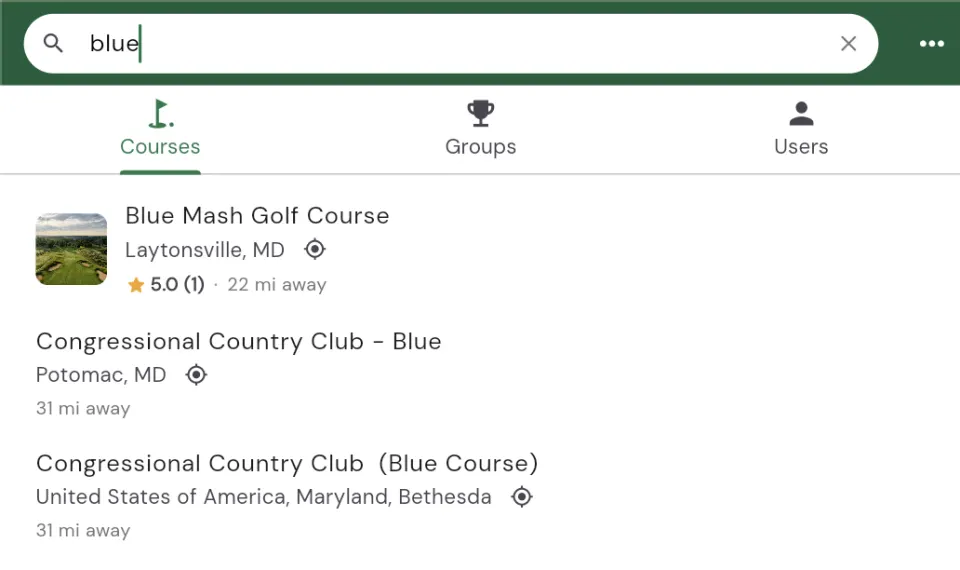
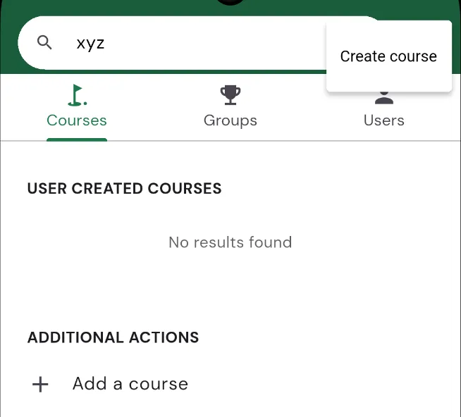
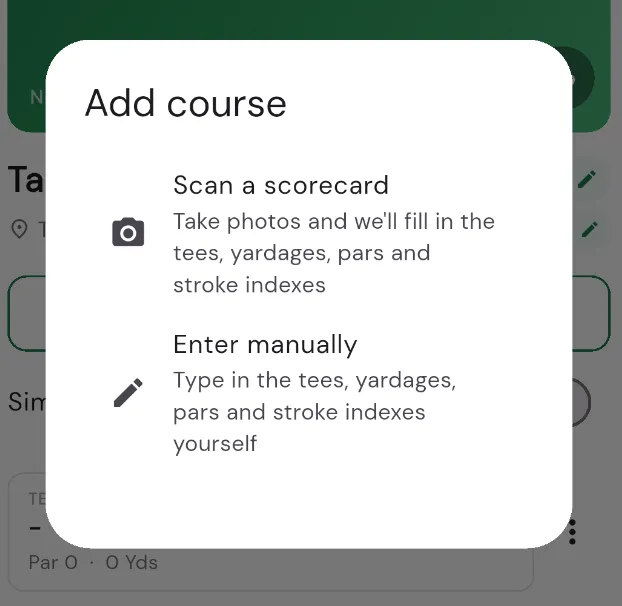

Adding a course
Squabbit already knows tens of thousands of golf courses, so most of the time you just search for the one you're playing and select it. When a course isn't in the database yet, you can add it: type in the details yourself, scan a paper scorecard and let AI fill everything in, or stitch two nines together into a full 18. This article walks through all four.
Searching for a course
Wherever Squabbit asks you to pick a course (starting a round, setting up a tournament round, and so on) you land on the course search view. From here:
- Start typing the course name in the search box. Results appear as you type.
- Courses in the official database show first. Courses that other players have created appear below, under User created courses.
- If you've allowed location access, courses nearby are surfaced and each result shows how far away it is.
- Your Recent courses are listed when the search box is empty, so a course you play often is one tap away.
Tap a course to select it. If the course you picked is missing pars or other hole details, Squabbit will offer to let you fill them in before you continue.

Adding a new course
If you search and the course you want isn't there, you can create it two ways: scroll to the bottom of the results to Additional actions and tap Add a course, or tap the overflow menu (the three dots in the top corner) and choose Create course. Both open the same flow.

You'll be asked how you'd like to add it:

- Scan a scorecard: take photos and Squabbit fills in the tees, yardages, pars and stroke indexes for you (covered in the next section).
- Enter manually: type in the tees, yardages, pars and stroke indexes yourself.
If you choose to enter it manually, you'll build the course up field by field:
- Give the course a name.
- Choose the location by searching for the course on Google Maps.
- Pick how many holes it has (9, 18, 27, or another number).
- Add one or more tees, then enter the par, stroke index and yardage for each hole.
Once a course is created it joins the shared database, so the next person who searches for it will find it too.
Scan a scorecard with AI
The fastest way to add a course, or to fill in a course that's missing data, is to scan the paper scorecard. Squabbit's AI reads the card and fills in the holes for you.
How it works
- Take a photo of the scorecard, or choose one from your gallery.
- You can add more than one photo, for example the front-nine side and the back-nine side, or one photo per nine on a course with more than 18 holes.
- The AI reads the scorecard and pulls out the tees, per-hole yardages, pars and stroke indexes. It also picks up the names of each nine and whether the distances are printed in yards or metres.
- Reading the card can take up to around 30 seconds.
Review before it's saved
Nothing is saved until you say so. After the scan, a Review scanned course sheet shows you exactly what was read so you can check it and fix anything that was misread. On this screen you can:
- Decide what to do with each tee it found: add it as a new tee, map it onto an existing tee on the course, or skip it.
- Confirm whether the distances on the card are in yards or metres (Squabbit always stores courses in yards and converts for you).
- Rename each nine.
- Tap any par, stroke index or yardage to correct it.
When everything looks right, tap Confirm to merge it into the course. The photos you scanned are also added to the course's photo library under the Scorecard section.
Combining two nines
Some facilities have several nine-hole loops (Blue, Red, White, and so on) that you mix and match to make a full round. When you go to play a nine-hole course, Squabbit offers to choose a different back 9. That opens the Combine 9's screen, where you build an 18-hole course out of two nines:
- Pick the course to use for the Front 9.
- Pick the course to use for the Back 9 (it has to be a different course).
- Tap Done and give the combined course a name.
Squabbit suggests a name based on the front nine. A clear convention helps: if you're playing the "Blue" and "Green" nines at Rocky Point,
name it something like Rocky Point (Blue/Green). The combined course is saved so you can reuse it next time without stitching the
nines back together.